在前面的学习中我们了解到，在Kubernetes中，Pod管理对象主要有RC(RS)、Deployment、StatefulSet、DaemonSet和Job（CronJob）等。其中RC(RS)和Deployment的用法已经大致了解，这里主要记录下StatefulSet、DaemonSet和Job（CronJob）的用法。默认情况下，Pod管理对象在创建Pod的时候是根据系统自动调度算法来完成部署的，我们可以设置调度策略来实现Pod的精准调度。
Pod调度策略
NodeSelector
我们可以该某个节点Node设置标签，然后通过NodeSelector让Pod调度到该节点上。
前面搭建的Kubernetes集群有两个worker节点node1和node2，我们给node2打个标签：
1 | kubectl label nodes node2 tier=frontend |
接着定义一个RC配置（node-select-pod.yml）：
1 | apiVersion: v1 |
创建该RC，观察Pod最终调度的节点：
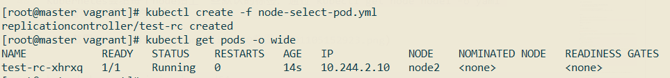
可以看到nginx pod已经成功调度到了node2节点上。
Kubernetes会给每个node贴上一些默认的标签，通过kubectl get node node1 -o yaml可以看到这些默认的标签：
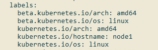
1 | beta.kubernetes.io/arch: amd64 |
这些默认的标签在下面这些调度策略中也是蛮常用的。
NodeAffinity
Affinity[əˈfɪnəti]：亲和力，喜好。NodeAffinity为Node亲和力调度，主要有两个规则（名称有点长，快18cm了吧）:
RequiredDuringSchedulingIgnoredDuringExecution：必须满足指定的规则才可以调度Pod，硬规则。
PreferredDuringSchedulingIgnoredDuringExecution：软规则，最好满足所列出的条件才调度Pod。
IgnoredDuringExecution的意思是，如果一个Pod已经调度到某个节点上了，然后这个节点的标签发生了改变，那么不影响已经调度好的Pod，ignore。
定义一个配置文件（node-affinity.yml），用于演示NodeAffinity：
1 | apiVersion: v1 |
上面配置使得RC在调度nginx pod的时候需要满足：节点具有beta.kubernetes.io/arch=amd64标签，如果具有disk-type=ssd标签就更好了，换句话说就是希望nginx pod调度在cpu架构为amd，磁盘为ssd的节点上。
上面配置中，操作符operator除了可以使用In外，还可以使用NotIn、Exists、DoesNotExist、Gt、Lt。
NodeAffinity规则设置需要注意的几个点：
如果nodeAffinity指定了多个nodeSelectorTerms，那么其中一个能够匹配成功即可；
如果在nodeSelectorTerms中有多个matchExpressions，则一个节点必须满足所有matchExpressions才能运行该Pod。
运行上面这个配置：
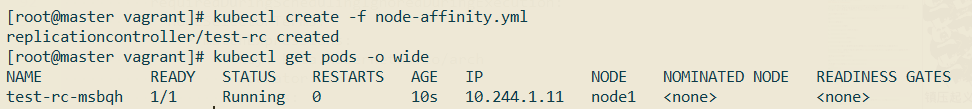
可以看到，因为node1和node2都具有beta.kubernetes.io/arch=amd64标签，而没有disk-type=ssd标签，所以nginx pod有可能被调度到node1也有可能被调度到node2。
我们给node1添加disk-type=ssd标签，重新运行上面的配置文件：
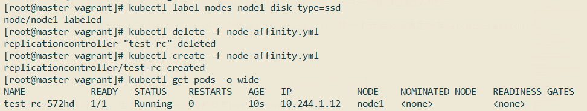
可以看到，nginx pod被调度到了node1上。
PodAffinity
PodAffinity指的是Pod亲和力调度股则，比如某些节点已经存在一些Pod了，新的Pod在调度的时候希望和指定Pod在一台节点上，亦或有意避开和指定Pod在一台节点上，这时候就可以用PodAffinity实现。
NodeAffinity规则设置也是通过requiredDuringSchedulingIgnoredDuringExecution和PreferredDuringSchedulingIgnoredDuringExecution实现的。此外，NodeAffinity还需要设置topology（拓扑规则），意为表达节点所属的topology范围：
kubernetes.io/hostname（节点所处的服务器）
failure-domain.beta.kubernetes.io/zone（节点所处的服务器云盘分区）
failure-domain.beta.kubernetes.io/region（节点所处的服务器云盘所在的地区）
要演示PodAffinity的使用，需要先创建一个参照Pod，创建一个参照Pod的配置文件（flag-pod.yml）:
1 | apiVersion: v1 |
这个Pod具有tier=frontend和app=flag-nginx标签。
创建这个参照Pod：
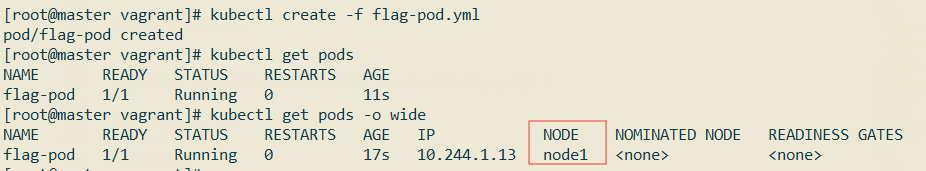
参照pod运行在了node1节点上。
创建好后，接着定义一个新的配置类（pod-affinity.yml）：
1 | apiVersion: v1 |
上述配置要求，nginx pod需要和标签包含tier=frontend的Pod分配在同一个Node上（topologyKey: kubernetes.io/hostname），创建该Pod，观察它被调度到哪个节点上了：
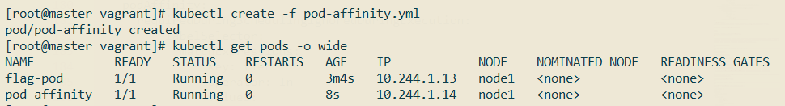
podAntiAffinity和podAffinity刚好相反，举个例子，创建一个新的配置类（pod-affinity-two.yml）：
1 | apiVersion: v1 |
上面配置希望nginx pod不和app=flag-nginx的Pod在同一个节点。
创建该Pod，观察它被调度到哪个节点上了：
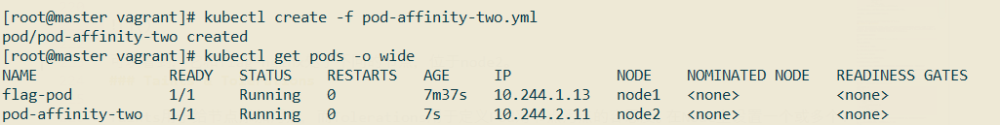
可以看到，它和flag-nginx处于不同的节点，位于node2。
Taints & Tolerations
Taints用于给节点添加污点，而Tolerations用于定义Pod对节点污点的容忍度。在Node上设置一个或多个Taint之后，除非Pod明确声明能够容忍这些污点，否则无法在这些Node上运行。Toleration是Pod的属性，让Pod能够（注意，只是能够，而非必须）运行在标注了Taint的Node上。
给节点设置污点的语法为：
1 | kubectl taint nodes [nodeName] key=value:rule |
其中rule的取值有：
NoScheudle：不调度；
PreferNoSchedule：最好不要调度；
NoExecute：不运行；
PreferNoExecute：最好不运行。
NoSchedule和NoExecute区别：
- NoSchedule不调度，如果是在调度后设置的污点，并且Pod没有容忍该污点，也能继续执行
- NoExecute不执行，如果是在调度后设置的污点，并且Pod没有容忍该污点，则会被驱逐。可以设置驱逐时间
tolerationSeconds: xx。
我们给node1节点设置一个污点：
1 | kubectl taint nodes node1 aa=bb:NoSchedule |
然后新建一个Pod配置类（pod-taint-test.yml）：
1 | apiVersion: v1 |
Pod的Toleration声明中的key和effect需要与Taint的设置保持一致，并且满足以下条件之一：
operator的值是Exists（无须指定value），如：
1
2
3
4
5......
tolerations:
- key: "aa"
operator: "Exists"
effect: "NoSchedule"operator的值是Equal并且value相等。如果不指定operator，则默认值为Equal。
另外，有如下两个特例：
- 空的key配合Exists操作符能够匹配所有的键和值；
- 空的effect匹配所有的effect。
回到pod-taint-test.yml，该配置文件定义nginx pod可以容忍aa=bb:NoSchedule这个污点，所以它有可能会被调度到node1上。创建该Pod，观察：
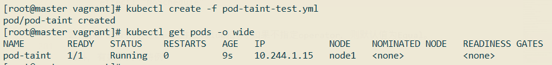
这时候在nginx pod所运行的节点node1上新增一个污点：
1 | kubectl taint nodes node1 cc=dd:NoExecute |
观察nginx pod情况：
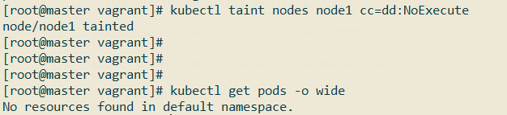
可以看到它被驱逐了，已经没有正在运行的pod了。
Pod Priority Preemption
我们可以给Pod指定优先级，优先级可以通过PriorityClass对象创建，比如创建一个优先级为10000的PriorityClass：
1 | apiVersion: scheduling.k8s.io/v1 |
上述文件定义了一个名为high-priority的优先级类别，优先级为10000，数字越大，优先越高。超过一亿的数字被系统保留，用于指派给系统组件。
优先级创建后，可以在Pod定义中引用该优先级：
1 | ... |
Pod管理对象
Job
Job是一种特殊的Pod管理对象，是一种一次性Pod运行任务，任务结束后，Pod的生命周期也就结束了。
定义一个Job配置类（job.yml）：
1 | apiVersion: batch/v1 |
Job的重启策略restartPolicy只支持Never和OnFailure。
创建这个Job：
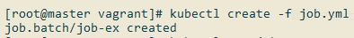
查看Job状态：
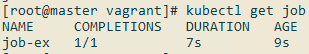
COMPLETIONS 1/1表示总共需要执行1个任务，共执行完1个任务。
查看对应Pod的状态：
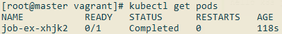
状态为Completed。
查看Job日志：
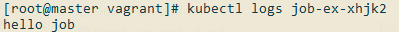
Job还可以设置并发数量和总Job数，修改上面的job.yml：
1 | apiVersion: batch/v1 |
运行该Job： 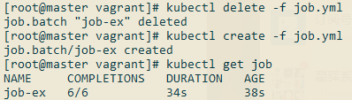
查看Pod：
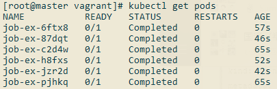
CronJob
CronJob顾名思义就是支持Cron表达式的Job，不过Kubernetes的Cron表达式和传统的Cron表达式不太一样，不支持到秒级。具体规则如下：
1 | Minutes Hours DayofMonth Month DayofWeek Year |
Minutes：可出现
,-*/这4个字符，有效范围为0～59的整数。Hours：可出现
,-*/这4个字符， 有效范围为0～23的整数。DayofMonth：可出现
,-*/?LWC这8个字符，有效范围为0～31的整数。Month：可出现
,-*/这4个字符，有效范围为1～12的整数或JAN～DEC。DayofWeek：可出现
,-*/?LC＃这8个字符，有效范围为1～7的整数或SUN～SAT。1表示星期天，2表示星期一，以此类推。
上面特殊字符的含义如下：
*：表示匹配该域的任意值，假如在Minutes域使用*，则表示每分钟都会触发事件。/：表示从起始时间开始触发，然后每隔固定时间触发一次，例如在Minutes域设置为5/20，则意味着第1次触发在第5min时，接下来每20min触发一次，将在第25min、第45min等时刻分别触发。
定义一个CronJob的配置类（cron-job.yml）：
1 | apiVersion: batch/v1beta1 |
上面的定时任务每分钟执行一次。
创建该CronJob：
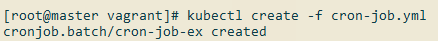
过个两三分钟查看运行情况：
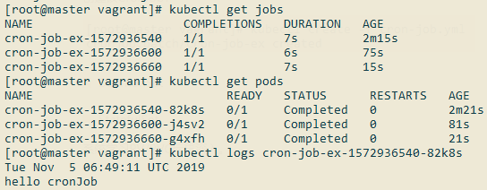
DaemonSet
DaemonSet适用于在每个Node都需要运行一个Pod的时候使用，比如：每一个Node上运行一个日志采集、性能监控的Pod。
比如我们现在需要在每个节点上都部署一个node-exporter来采集节点信息，可以通过DaemonSet来实现。
定义一个DaemonSet配置文件（daemonset.yml）：
1 | apiVersion: apps/v1 |
创建该DaemonSet之前先删除上面在node1节点上创建的污点：
1 | kubectl taint nodes node1 aa:NoSchedule- |
创建该DaemonSet，然后观察Pod信息，看是否每个节点都部署了一个实例：
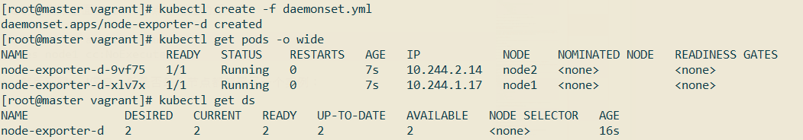
StatefulSet
系统学习PV/PVC后再深入。
《Kubernetes权威指南(第4版)》读书笔记